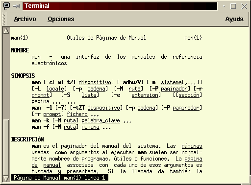
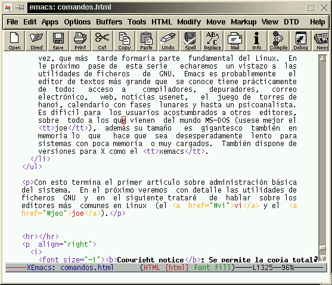

|
Manuel Muriel Cordero Acerca del Autor: Manuel Muriel es alumno de 3ª de ingeniería informática en la Universidad de Sevilla. Tengo a la informática como mi principal hobby, aparte de ser mis estudios. Linux fue un gran descubrimiento para mí. A parte de ello tengo una gran afición a la lectura, especialmente la narrativa fantástica (Tolkien es mi ídolo :), practicar pachangas de baloncesto con mis colegas y el cine , mejor si es de ciencia ficción (adoro Blade Runner, la serie de las galaxias, 2001, planeta prohibido, ... ) murie@arturo.lsi.us.es Índice: Introducción Cosas que se pueden hacer con Linux Administración básica del sistema Cómo son los comandos Dónde encontrar información Comandos básicos de manejo de ficheros Comodines para ficheros Redirecciones: Editores de texto |
Resumen: Aunque después de mucho tiempo de ser usuario de Linux a uno le parezca un sistema amigable y potente, la primera impresión que suele recibir un usuario sin demasiados conocimientos de informática no es precisamente la de un "sistema amigable". En este artículo, el autor nos lleva de la mano por esos primeros momentos, enseñándonos los conceptos, programas y "trucos" que todo usuario de UNIX necesita conocer.
Este artículo va dedicado especialmente a los recién llegados a Linux (y a cualquier UNIX por extensión), aunque también creo puede resultar útil para repasar algunos conceptos a los ya iniciados.
Es muy posible que a alguno de nuestros lectores después de comparse un ordenador solo lo utilice para poco más que como procesador de textos, algún que otro juego y algún programa de contabilidad. El Sistema Operativo no sabe ni qué es, y se lo pusieron "gratis" (o eso le dijeron) al comprar el ordenador (generalmente hablamos del Windows 95), el resto de programas es posible que los haya obtenido de forma pirata, gracias al amigo de un conocido suyo, ya que no puede permitirse el lujo de gastarse tanto dinero en software. Desea que el ordenador haga el trabajo que quiere sin complicarse mucho la vida. Y le molesta bastante perder el trabajo que ha realizado cuando el ordenador le da mensajes crípticos como "Error de protección de memoria en 0FAG:BD07" pero no le de más importancia ya que no conoce otra cosa.
Un día llega a sus oídos algo sobre un sistema operativo gratuito que no falla, que se llama "Linux", y decide probarlo comprando una revista especializada en informática que contiene un CD con dicho sistema.
Tras un enrevesado proceso de instalación en el que tuvo que particionar su disco duro, cosa que por cierto no le gusto nada, para mantener una partición de Windows y dejar un pequeño espacio para Linux. Tras tenerlo todo listo arranca con el nuevo sistema operativo y se encuentra con algo como:
LILO:
Ha leído la documentación y sabe que ahora se tiene que introducir el nombre que le dió a la partición Linux. Tras varias pantallas de mensajes aparece algo similar a:
Red Hat linux 2.0.32
darkstar login:
Ahora ha de introducir ahora "root" y luego la clave de acceso al sistema que usted asignó durante la instalación.
Tras eso se encuentra con algo como:
root@darkstar:~#
¿Ahora qué?
Tras ver esta pantalla se preguntará sobre la utilidad de tanto esfuerzo. No parece que haya un sistema de ventanas o un interfaz gráfico más o menos decente. Una primera solución para ese detalle es teclear la orden: startx
Si usted ha configurado bien la tarjeta de vídeo durante el proceso de instalación obtendrá algo que quizá le resulta familiar.
El siguiente paso es intentar sacar algo productivo de todo esto. Un paquete interesante es la suite StarOffice. Es una suite ofimática, al igual que la de microsoft (R), con multitud de facilidades. Hay otro artículo en esta revista (procesador de texto, creación de presentaciones) que trata este programa en detalle. Además puede obtener una copia de él de forma gratuita en http://www.stardivision.com/. Ese paquete ofrece la solución a la mayoría de las necesidades que el usuario medio tiene.
Aparte de éste, dispone de muchas aplicaciones más:
Estos son los programas para un usuario medio, aparte hay multitud de programas para usos especializados como programación, CAD, análisis matemático, cálculo científico, Internet, ...
Muchos de estos programas funcionan bajo ese entorno de ventanas que ha encontrado, pero otros precisan de la línea de comandos (interprete de ordenes) que se encontró al entrar en el sistema. Linux, como todos los UNIX, precisa de esa línea de comandos ya que desde ella se puede realizar muchas labores que no precisan del entorno de ventanas o que es más cómodo realizarlas desde ese sitio.
Todo usuario de ordenador siempre debe saber qué es lo que tiene en su disco duro y realizar trabajos de organización sobre las cosas que introduce en este. El indicador del sistema (en inglés prompt) es una herramienta más útil y más flexible que el visor del sistema típico de Windows.
En adelante supondremos que el usuario tiene ciertos conocimientos de MSDOS o algún sistema operativo con interprete de comandos equivalente.
El disco en Linux está organizado en ficheros. Los hay de diversas clases:
Si teclea la orden pwd obtendrá lo siguiente:
/root
Es el directorio actual donde se encuentra. Curioseemos un poco y vayamos al directorio raíz -se llama así por que es el padre de todos los directorios y ficheros- con la orden: cd /
Y ahora veamos que tenemos aquí, usemos el comando para lista el contenido del directorio : ls
# ls
dev home lost+found root
var bin dosc mnt
sbin boot etc tmp
lib proc usr
Aquí tenemos diversos directorios que veamos cual es su función:
| Directorio | Función |
|---|---|
| dev | Contiene todos los ficheros de los dispositivos. |
| home | Es el directorio para los usuarios. Pues sí, Linux ofrece la capacidad de que varias personas actúen a la vez sobre el mismo ordenador sin que interfieran los unos con los otros (es la cualidad de multiusuario). Un usuario nuevo se puede crear con el comando: adduser [nombre-usuario] (donde nombre-usuario puede ser pepito ). Es más, le recomiendo que se cree uno propio para los trabajos típicos y reserve root para las labores de administración, ya que por ejemplo puede borrar accidentalmente todo los ficheros del disco duro como root, cosa que como usuario el sistema es imposible. |
| lost+found | Ha tenido alguna vez que usar las utilidades norton para recuperar un fichero que había perdido por algún cluster defectuoso. No se preocupe, si el disco duro falla es el propio sistema el que automáticamente tratará de recuperar los ficheros, si el proceso de recuperación no es capaz de averiguar de donde provenían los bloques encontrados los colocará aquí. Es una nota más de porqué se dice que Linux es superior a cualquier producto de microsoft. |
| root | Sí, lo ha adivinado, es el directorio de trabajo del super-usuario, al igual que home para los usuarios. |
| var | Contiene diversos ficheros temporales para almacenar noticias del sistema, correo electrónico entre usuarios, las colas de impresorión... |
| bin | Aquí se encuentran los comandos más importantes del sistema a la hora de administrarlo. |
| dosc | Es posible que este directorio se llamase de otra forma en su computadora. Aquí puede acceder a la partición de windows (o MSDOS) |
| mnt | Si desea acceder a un CD generalmente se usará este directorio para un proceso llamado "montaje". De tal manera que si desea acceder a ellos deberá usar la orden mount -t iso9660 /dev/cdrom /mnt. Es posible que esta orden difiera según haya configurado el sistema. |
| sbin | Aquí están los comandos de administración avanzada que, por seguridad, no deben ser ejecutados por personas que no sean el super-usuario (root). |
| boot | Aquí se encuentra el núcleo del sistema (el corazón). |
| etc | En este directorio se encuentran ficheros de configuración del sistema, así como el proceso de arranque del sistema o del entorno de ventanas (algo así como los ficheros CONFIG.SYS y AUTOEXEC.BAT). |
| tmp | Este es usado por los programas como directorio temporal en los que introducen ficheros intermedios o basura. Generalmente el sistema los borra automáticamente al arrancar. |
| lib | Directorio de bliblioteca básicas del sistema. Linux es un sistema que para ahorrar memoria el código que comparten muchos programas se introduce en un solo fichero, llamado bliblioteca, de tal manera que hay una sola copia de él en memoria si se está utilizando. |
| proc | Este es un directorio espejo de los programas que están en memoria, es usado para que programas como ps, top o kill nos permitan ver qué programas se están ejecutando en el sistema y (si se queda alguno colgado) eliminarlos de su ejecución. Evitando como suele suceder en windows tener que reiniciar el sistema y perder todo lo que hacen los demás programas. |
| usr | Aquí van a estar los programas de aplicación, así como su documentación y blibliotecas. |
Generalmente sólo se tendrá que gestionar los ficheros que estén sobre el directorio root o del usuario particular que use.
Linux es básicamente un sistema operativo en el que la forma de interactuar con él reside en la línea de comandos (aunque existe un entorno de ventanas llamado X que se pone en marcha, como hemos visto antes, con startx). Cuando el usuario entra en el sistema verá algo como esto:
root@darkstar: ~#
Éste es un tipico indicador del interprete de ordenes -este prompt se puede configurar a gusto del usuario-; su significado es el siguiente: el login del usuario en cuestión "root", una arroba "@", el nombre de la máquina "darkstar", dos puntos :, el directorio actual de trabajo (en este caso ~ quiere decir el directorio de trabajo del usuario, como hemos visto antes es /root/) ~, una almohadilla # que indica que tienes permisos de superusuario (o sea que tienes total control sobre la maquina y finalmente un cursor parpadeante. Tras ese cursor puedes introducir ordenes al ordenador a modo de comandos del sistema:
root@darkstar:~# ls -l pepito
En este ejemplo vemos como el usuario ha introducido una orden que se compone de un comando (ls) una opción para el comando (-l) y un parámetro (pepito). Cuando el usuario pulse retorno de carro, Linux listará el fichero pepito (o sea mostrará sus características como tamaño, fecha de creación, entre otra cosas que veremos más en detalle posteriormente, por supuesto esto lo hará si dicho fichero existe.
Linux, generalmente, sólo acepta un comando seguido de un espacio (para distinguir cuando termina el comando) y las opciones separadas por espacios entre ellas.
ls -l -a pepito
Las opciones también pueden ir juntas de esta forma:
ls -la pepito
Por último, se le pueden introducir tantos ficheros (parámetros) como se quieran separados de espacios
ls pepito juanito maría
Esto listará los ficheros pepito, juanito y maría sin tanto detalle como la hace con la opción -l, si desea esos detalles sólo hace falta ponerla entre el comando y los parámetros.
ls -l pepito juanito maría
El sistema le brinda una gran cantidad de información acerca de cómo usar el sistema. Si conoce un comando y desea saber como se maneja, pruebe con:
man [comando]
En pantalla aparecerá el mannual de uso del comando pedido. Existe toda una completa explicación de casi todos los comandos del sistema. Conociendo la orden man no es necesario memorizar todos los parámetros de cada comando
|  |
|---|
| Página del manual del comando man: man man |
Si en cambio sólo conoce un tema en concreto del que desee saber pruebe:
apropos [tema]
y le ofrecerá un listado con todos los comandos relacionados con ese tema.
Otra forma de obtener información sobre un comando concreto es pidiendolse directamente al comando. Algunos comandos dan información un poco más breve y concisa dándole como parámetro --help. Por ejemplo con el comando ls
ls --help
Es posible que la salida de estos comandos no cupiese en una sóla pantalla, no se preocupe con las teclas Mays+Repag podrá ver lo listado anteriormente.
Muchos programas ofrecen gran cantidad de información en sus directorio de documentación localizados en /usr/doc. Si desea ver la información sobre tetex podrá dirigirse a ella yendo a ese directorio, listando lo que hay en este y ver cual se corresponde con la utilidad tetex. Se accede a este con cd y allí podrá encontrar muchos ficheros (generalmente de texto plano ASCII) que se pueden visualizar por ejemplo con el comando more [nombre-fichero].
También se puede encontrar información en la páginas info que se pueden acceder fácilmente desde el editor emacs con la secuencia de teclas [Control+h][Control+i].
Todavía se puede encontrar más información en la web en:
http://slug.ctv.esTambién hay grupos de noticias bajo el protocolo nntp donde se habla extensamente de temas de linux:
news:es.comp.os.linux: grupo en españolY por último en irc-hispano se suele encontrar el canal #linux
Si ha conocido el DOS, recordara las ordenes dir, cd, rd, md y algunas otras más. Aquí veremos las equivalentes para el proceso de manejar los ficheros que creamos. Siempre existe la posibilidad de ver con más detalle lo que hace cada uno con man [comando].
Ya hemos usado esta orden anteriormente. Completemos un poco más el conocimiento de su uso:
Si pedimos la orden:
$ ls -l
drwxr-xr-x 3 fenix fenix 1024 Jun 15 1997 Calendar
drwx------ 5 fenix fenix 1024 Nov 6 19:35 Desktop
drwx------ 2 fenix fenix 1024 May 16 1997 Mail
drwxrwxr-x 2 fenix fenix 1024 Mar 10 00:28 X11
lrwxrwxrwx 1 root root 11 Mar 13 20:53 ada -> private/ada
drwxrwxr-x 2 fenix fenix 1024 Mar 10 00:28 bin
lrwxrwxrwx 1 root root 9 Mar 13 20:53 c -> private/c
-rw------- 1 fenix fenix 868352 Apr 7 21:19 core
lrwxrwxrwx 1 root root 12 Mar 13 20:53 lisp -> private/lisp
drwx------ 2 fenix fenix 1024 Jun 13 1997 mail
-rw-rw-r-- 1 fenix fenix 302 Apr 7 20:30 mine.bmp
drwxrwxr-x 2 fenix fenix 1024 Mar 10 00:28 misdocumentos
drwxr-xr-x 2 fenix fenix 1024 Nov 6 18:59 nhs
drwx------ 2 fenix fenix 1024 Mar 12 18:05 nsmail
drwxrwxr-x 2 fenix fenix 1024 Feb 17 21:27 odd
drwxrwxr-x 8 fenix fenix 1024 Mar 12 23:04 private
lrwxrwxrwx 1 root root 14 Mar 13 20:53 prolog -> private/prolog
-rw-r--r-- 1 fenix fenix 23051 Jan 27 21:14 system.fvwm2rc
drwxrwxr-x 4 fenix fenix 1024 Mar 22 15:36 tmp
lrwxrwxrwx 1 root root 11 Mar 13 20:53 www -> private/www
-rwxr-xr-x 1 fenix fenix 1239 Nov 6 19:46 xinitrc.bak
Esto es lo que se denomina un listado largo, en el que se nos ofrece una mayor cantidad de información acerca de los ficheros que contiene el directorio. Podemos diferenciar 6 campos:
El primero nos ofrece información acerca de los permisos del fichero. Se componen de 10 letras divididas en 3 grupos de 3 y la primera de ellas.
La primera letra nos ofrece información acerca del tipo de fichero:
| - | fichero ordinario |
| d | directorio |
| l | enlace |
| c | fichero especial, dispositivo de caracteres: o sea sólo se le puede mandar o recoger información byte a byte sin posibilidad de volver a leer el mismo dato. |
| b | fichero especial, dispositivo de bloques: estos dispositivos permiten realizar operaciones de posicionamiento aleatorio. |
| p | tuberías |
| f | Pilas |
Las restantes letras nos indican quién y de qué forma se puede acceder a ese fichero. Están divididas en 3 grupos de 3 letras. Las tres primeras indican cómo puede actuar el usuario propietario sobre el fichero, el segundo trio corresponde al grupo (el usuario puede pertenecer a un grupo de trabajo de tal manera que los ficheros del grupo puedan ser compartidos por estos) y el tercer trio es el resto de los usuarios del systema (o el mundo)
Cada grupo de 3 letras indica lo siguiente:
| - | no se puede leer el fichero, si es un directorio no se podrá listar su contenido. |
| r | se puede leer. |
| - | no se puede escribir sobre el fichero (ni añadir información), si es un directorio no se podrán crear nuevos ficheros ni borrar otros sobre este. |
| w | se puede escribir (crear y borrar ficheros si es un directorio) |
| - | no se puede ejecutar el fichero (los programas tendrán una x), si es un directorio este no será accesible (o sea no se podrá acceder con la orden cd en él) |
| x | se puede ejecutar. |
| s | Este artibuto sólo tiene sentido en ficheros ejecutable. Independientemente del usuario que ejeute este programa, el programa se ejecutará con los permisos del propietario del fichero en lugar de los permisos de usuario que lo ejecuta. No se preocupe si no ha entendido la utilidad del atributo "s", sólo la necesitan usuarios muy avanzados. El nombre de éste es "SetUID". |
Estos permisos se pueden cambiar con la orden chmod que veremos posteriormente.
El siguiente campo del listado es el número de enlaces que apuntan a este fichero.
El siguiente es el usuario propietario del archivo.
El cuarto nos indica el grupo al que pertenece, de tal manera que los que pertenezcan al mismo grupo podrán acceder a este según los permisos de grupo asignados (segundo trio de permisos).
El quinto nos da el tamaño del fichero en bytes.
El sexto es la fecha y la hora de la última modificación del fichero
Y por último está el nombre del fichero. Si se trata de un enlace además nos indica a qué fichero está referenciando con -> [origen]
Por otra parte también existen los ficheros ocultos en Linux. Estos se caracterizan por que su primer carácter en su nombre es un punto (.)
Para poder listar los ficheros ocultos se usa la opción -a con lo que también mostramos los ocultos aparte de todos los restantes ficheros.
$ ls -a .profile .bash_profile .bashrc .xinitrc mime.bmp misdocumentos
cp [fichero] [destino]
Si el destino si no es un directorio existente se interpretará que quieres copiar el fichero con otro nombre.
mv [fichero] [destino]
Si el destino no es un directorio existente querrá decir que quieres renombrar el fichero.
cd sin argumentos te llevará al directorio inicial. Si eres el super-usuario te llevará al directorio /root/; si eres pepe /home/pepe.
Como puedes ver, también aquí los directorios tienen la barra inclinada a la derecha (y no a la izquierda como en MSDOS)
Por último, /home puede ser substituido por el carácter
~ (este se obtiene con Altgr + 4). Así cd
~pepe
te llevará a /home/pepe
Es así de sencillo mkdir [nombre-de-directorio] y crea un directorio con ese nombre.
Si deseas borrar un directorio que no contiene ficheros, este comando hará dicha función con rmdir [nombre-fichero]. Si quieres borrar directorios que contengan ficheros (u otros directorios) mira la orden rm.
Borra cualquier tipo de ficheros con rm [nombre-fichero].
| -i | pide confirmación para borrar el fichero. |
| -r | borra un directorio y todo su contenido. |
| -rf | borra un directorio y sus contenidos sin pedir confirmación. |
Linux permite que un fichero tenga distinto nombre o que se pueda acceder a él desde un directorio distinto. Esto se realiza con enlaces. Los hay de dos tipos:
Los enlaces físicos se realizan con: ln [fichero-origen] [fichero-destino]
Y los simbólicos con: ln -s [fichero-origen] [fichero-destino]
Esta orden muestra el contenido del fichero en pantalla.
cat [nombre-fichero]
Si el fichero que queremos ver es muy largo (tiene más líneas que la pantalla sobre la que lo queremos ver), se perderán las primeras líneas por la parte superior. Una solución es utilizar el buffer de pantalla, sobre el que nos podemos desplazar con Mays+Repag. Pero este buffer es de un tamaño limitado y en muchas ocasiones no nos servirá. La orden more nos permite ver de forma paginada los ficheros. Su sintaxis es:
more [nombre-fichero]
Se trata de un programa interactivo. Las "teclas" (ordenes interactivas) más interesantes son:
| Tecla | Función |
|---|---|
| Espaciador | Avanza una página |
| b | Retrocede una página |
| return | Avanza una línea |
| /[cadena] | Busca la siguiente aparición de cadena en el fichero |
| ?[cadena] | Busca la anterior aparición de cadena en el fichero |
| q | Salir |
Existe un programa equivalente y más avanzado llamado less.
Con este podemos modificar cómo se puede acceder al fichero en cuestión. Un usuario normal (root puede hacer lo que quiera) sólo puede modificar los permisos de los ficheros que es propietario. Se compone de 2 tipos de parámetros separados de un espacio.
chmod [quien][+/-] [permisos-nuevos] [fichero]
En quien podemos refirirnos a:
| Quién | Descripción |
|---|---|
| u | Usuario al que pertenece el archivo |
| g | grupo al que pertenece el archivo |
| o | resto de usuarios |
| a | cualquier usuario (poseedor, grupo, otros) |
Con + añadimos permisos y con - los retiramos.
En permisos-nuevos indicamos qué permisos se añaden o se eliminan. Estos se caracterizan por las letras del primer campo de un listado largo con ls (o sea r:lectura, w:escritura, x:ejecución o visita, s:SetUID)
Veamos un ejemplo para aclarar
chmod u+rw mio
Con éste permitimos que el usuario propietario, usted en este caso, tenga permisos de lectura y escritura sobre el fichero mio.
chmod a-x directorio
Y con éste le retiramos a todos los usuarios (incluido nosotros, el propietario) el derecho de ser visitado a directorio
chmod tiene otras opciones más avanzadas, que no veremos aquí, consulte la página de manual con el comando:
man chmod
Linux permite que se pueda actuar sobre un conjunto de ficheros en vez de uno a uno. Podemos referirnos a un conunto de ficheros que tengan alguna característica común en su nombre. Esto se consigue con el uso de comodines a la hora de dar argumentos a los comandos. Algunos pueden resultar conocidos del mundo MS-DOS:
Con el asterisco podemos refirirnos a:
rm *
borrar todos los ficheros
rm a*
borrar todos los ficheros que comienzen con a
rm bet*as
borrar todos los ficheros que comienzen con bet y terminen con as
Con la interrogación podemos conseguir:
cat c?t
mostrar todos los ficheros que comienzen por c, que contenga una letra cualquiera más y terminen con t.
De este forma podemos referirnos a:
more [tp]erez
mostrar de forma páginada los ficheros terez y perez, si es que existen.
cp c[AEIOU]endo directorio
copiar todos los que empiecen por c que tenga después una letra vocal mayúscula y terminen en endo y meterlos en el directorio.
Podemos usar un guión para crear intervalos:
mv *[a-z] basura
mover todos los ficheros que terminen en letra minúscula al
directorio basura.
ATENCIÓN: esto no incluye a la
letra eñe y las vocales acentuadas (ya se sabe que esto de la
informática es cosa de ingleses y ellos mandan)
También podemos negar lo que haya en el intervalo:
ls [!a-zA-Z]*
listar todos los ficheros que no contengan en su primera letra una letra mayúscula o minúscula.
Linux es extremadamente potente por multitud de razones pero una de las utilidades que le permiten una gran versatilidad en la línea de comandos reside en las redirecciones.
Las redirecciones nos permiten redirigir la salida de un comando o programa para que en lugar de salir a pantallan, se envíe a un fichero. También, aunque más raramente, podemos verter el contenido de un fichero para que lo acepte como entrada otro comando, podemos concatenar la salida de un comando a un fichero y por último podemos conseguir que la salida de un comando sea entrada de otro.
Con el símbolo mayor que podemos verter la salida de un programa a un fichero. Por ejemplo:
cal > febrero
Así conseguimos que la salida del comando cal -en este caso un calendario con el mes actual en curso- al fichero febrero.
Con el símbolo menor que podemos redirigir el contenido de un fichero para que lo acepte como entrada un comando.
mail manolo < carta
Con esto le mandamos por correo electrónico al usuario manolo el fichero carta
Los dobles mayor que nos permiten la posibilidad de que la salida del comando se añada al final del fichero en cuestión, sin destruir el contenido que antes había en el fichero. Con la redirección mayor que simple, el contenido original del fichero era reemplazado por la salida del comando, por tanto se perdia el contenido original de éste.
cat fichero1 fichero2 fichero3 >> fichero-total
Añadimos (concatenamos)al final de fichero-total los contenidos de los fichero1, fichero2 y fichero3. En otras palabras.
Este símbolo, obtenido con AltGr+1, nos permite que la salida de un comando sea la entrada de otro. No hay que confundir la redirección de tubería con los ficheros especiales de tubería, a efectos prácticos son dos cosas distintas. Veamos un ejemplo:
who | grep "manolo"
who nos indica los usuarios que se encuentran en el sistema conectados, desde qué terminales están y hora de conexión. grep va a filtrar esa salida de tal manera que sólo nos mostrará las líneas que contengan manolo. Sabemos que manolo es el nombre de un usuario con el que queremos hablar y en nuestro sistema no hay ninguna terminal que se llame manolo, gracias a esto podemos saber si manolo está conectado en el sistema.
Veámoslo paso a paso. Primero ejecute en su linux el comando
who y luego ejecute who, pasandole una tubería
con un grep y un usuario conectado (probablemente root).
Para que el resultado sea satisfactorio conectese con varios
usuarios de nombres distintos desde varias consolas. Linux
dispone de un total de 7 consolas que se pueden acceder desde el
ordenador que va actuar de servidor (generalmente donde ha
instalado linux). Además Linux permite conectarse desde otros
ordenadores haciendo uso de hardware de red común como token-ring,
ethernet, modem, etc.. Las consolas del ordenador servidor pueden
acederse con las teclas Alt+F1 (para la primera), Ctrl+Alt+F2
(segunda), Ctrl+Alt+F3, Ctrl+Alt+F4, Ctrl+Alt+F5 y Ctrl+Alt+F6.
Ctrl+Alt+F7 y Ctrl+Alt+F8 son las terminales gráficas, que se
activan con startx. Es posible cambiar del modo gráfico a
una cosola de texto con estas combinaciones.
Por último, precisamos de los editores de texto. Los editores de texto son los programas que nos permiten introducir texto, en formato ASCII, en un fichero. Respecto al uso de editores hay casi autenticas religiones fanáticas sobre quién es más hombre dependiendo del editor que use :-). Yo por mi parte te recomiendo que uses el que te resulte más cómodo. Editores hay muchos, veamos un breve resumen.
$ cat > carta
Querido pepe:
Deseaba decirte que...
Se termina de escribir con la secuencia de teclas [Ctrl]+[d].
|  |
|---|
| Versión gráfica del popular EMACS (XEMACS). |
Con esto termina el primer artículo sobre administración básica del sistema. En el próximo veremos con detalle las utilidades de ficheros GNU y en el siguiente trataré de hablar sobre los editores más comunes en Linux (el vi y el joe).
Copyright notice: Se permite la copia total o parcial del presente artículo (sin modificaciones) siempre y cuando se incluya esta anotación sobre copyright y la siguiente línea correspondiente a los datos del autor.
Manuel Muriel Cordero es estudiante de la Facultad de informática y estadística de Sevilla. (c) Abril 1998.
Todas las marcas referidas en este artículo son propiedad de sus respectivas empresas productoras.
Artículo original en Castellano
|
Páginas web mantenidas por Miguel Angel Sepúlveda © Manuel Muriel Cordero 1998 LinuxFocus 1998 |